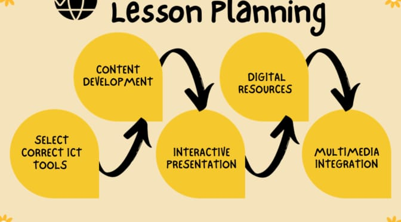

How to help learners move from knowing to doing
Employees are ultimately responsible for their own development and applying new knowledge, but you can make it easier for them. Your company will benefit from your training strategy more if you look past the goal of imparting knowledge and aim for boosting application as well. Here are six ways to help your employees move from knowing to doing when it comes to new skills and shed some light between knowledge vs. skill.
1. Give it time
The first thing to know about behavior change is that it will require patience. Changing habits takes time. And people with busy work schedules are more likely to stick to what they know well. So build the time into your training strategy.
Make sure learning and development is a priority. Give people time to go through training and bring their skills up to speed.
You should also introduce new skills and methods gradually. Rolling out multiple courses aimed at different behavior change can get confusing and overwhelming. So start with one and make sure people have time to get the theory and the practice down before you introduce another.
2. Show learners what the skills look like
Help employees get a grasp on new skills on the job by letting them see how they apply in their specific role.
In the case of customer service training, you can teach people the general steps to go through in de-escalating customer concerns. But then show them specific examples of what it looks like in their work environment.
Try things like:
Creating video scenarios where people act out an actual conversation.
Including written sample conversations in the material.
Sharing case studies of customer service success stories from your company so they can see how a colleague actually handled a situation.
Seeing specific applications and scripts will help people visualize how they’ll use the skills themselves and make them better prepared to do so successfully.
3. Incorporate practice
Give people hands-on experience with the skills in the training course. Set up scenarios that they would actually face at work and have them practice responding with the skills. This could look like quizzes within the training or breakout sessions to role-play scenarios with fellow learners.

Knowledge vs. skill: Which is more important?
Why you need to focus your training on both
How to help learners move from knowing to doing
Moving from knowledge to skill is a long-term goal
“Knowing is not enough; we must apply. Willing is not enough; we must do.”
Johann Wolfgang von Goethe
As a learning and development professional, you know your job isn’t as simple as just getting the right information in front of the right people. Or even getting people to understand the information once they’ve got it.
When it comes to employee training, there’s a big difference between knowledge and skill. Even the best of courses can fall short if you fail to help people move from knowing the right thing to do to actually doing it.
Your goal with any training is to impact learners’ behavior. So you want to ensure your strategy helps bridge the gap between knowing and doing.
What’s the catch with knowledge vs. skill? We’ll help you get started with tips for moving learners from knowing to doing. So, let’s begin by defining the difference between knowledge and skill.
Knowledge vs. skill: Which is more important?
Knowledge is theoretical. It’s an intellectual understanding of information, knowing the right answers.
Skills are practical. They are the actions people take to put their knowledge into practice.
This is the main difference between knowledge and skill, but let’s delve into it a bit more.
In terms of workplace learning, all training should impart knowledge. You want learners to walk away from a course knowing the concepts you set out to teach them. You also want it to go a step further. Your training strategy should be tied to specific company goals, so you should be looking for specific, measurable results after course completion.
Why you need to focus your training on both
When you treat training as just a box to tick, you risk focusing only on knowledge transfer, and that can hurt your overall company goals. This is why understanding knowledge vs. skill is important.
For instance, say your company rolls out compliance training on cybersecurity. You put everyone through the training and ensure each employee passes the multiple choice test at the end of the course. Now the company’s certified, and you can check that goal off.
But have you achieved the more important goal of the training: making your company’s data and systems more secure? Just because employees recognize the skills doesn’t mean they’ll actually be willing or able to use them back on the job. And if they don’t, you’re still at risk.
If you want to reach your KPIs, you need to ensure people can move from knowing to doing. This applies to any kind of learning.
If you want to improve your customer satisfaction scores, you may train your reps on the best way to handle tough customer complaints. But recognizing the signs of a heated situation and understanding the general steps needed to de-escalate it isn’t the same as knowing what exactly to say when faced with an angry customer.
What Are Computer Skills?
Computer skills are an applicant's knowledge and ability to use a computer and the related technology effectively. Today, employers want people who know how to use the latest technology to increase work productivity and streamline work processes. For example, employers expect an applicant who appears for the marketing role to possess knowledge of using different presentation software.
Types Of Computer Skills
Broadly, there are two categories of computer skills: software and hardware:
Software skills: help you use computer-related applications, tools and programs. Often, employers do not mention computer skills in the job description because these are universal skills and prerequisites for most jobs. For example, employers want applicants to know word processing software like Microsoft Word.
Hardware skills: it showcases your ability to use and operate a computer. It could be switching on and off a computer or connecting a USB to the CPU slot. Advanced hardware computer skills involve fixing broken devices, connecting different virtual machines, network configuration and even cloud management.
Here is a list of essential computer skills:
Microsoft Office
Social media
Graphic design
Presentation software
Computer programming
Communication and collaboration tools
Not every role requires knowledge of advanced computer technical skills. If you apply for a developer's role, you must know at least one of the coding languages from Python, Java, C++, C# and PHP. But when you apply for an administrative role, knowledge of Microsoft Office suite, productivity tools and accounting software is essential.